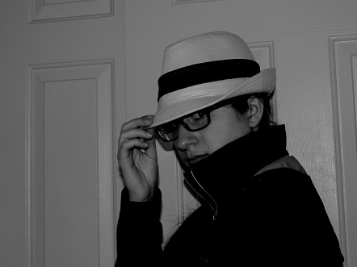
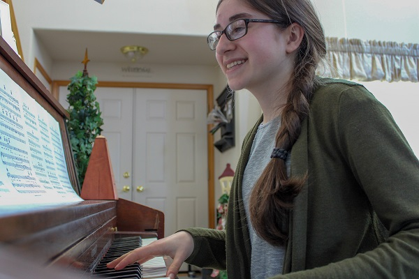
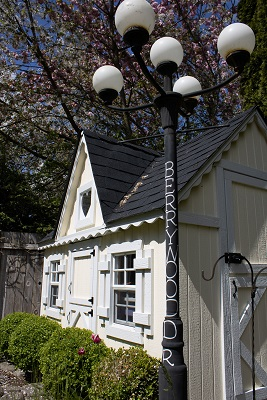

I took this class during Spring term 2020. My professor was Jon Meyers,
a Pacific Northwest Photographer and owner of StudioMeyers.
I learned so much about photography from this class, and got to know
my new DSLR camera very well by the end of the term. Here's some of my work!
Check out my blog posts below!
Week 1: Self-Portraits
The first week of Digital Photography class was introductions and creating
self-portraits of ourselves. Here is my headshot.
Here is my fiction photo.

Here is my documentary photo - I love playing piano!

By: Kailey Slocum | Spring 2020 | Week 1
Week 2: Photography Research
Kathleen Clemmons
After some research on various photography forms, I chose macro photography,
which especially piqued my interest. I have always loved taking pictures
of the flowers in my backyard, and I am fascinated by professional photographs
that enlarge tiny objects so that we can see the miniscule details of flowers,
insects, and other small parts of nature.
I came across a professional photographer by the name of Kathleen Clemons,
who specializes in macro flower photography but is also known for her
impressions, portraits, landscapes, textures, and more. I was drawn to
her photography style because her floral photos in particular have a beautiful
soft, dreamy look. Each of her photos is so picturesque, and many of them look
like a painting. Kathleen achieves this affect in her photos by using special
lenses from a company called Lensbaby that makes special-effects camera lenses
for SLR cameras. This company even gave her the nickname “Lensbaby Guru”!
Kathleen Clemons is skilled at utilizing natural light in her unique photos.
She lives in Maine, but her work is known worldwide through Corbis and
Getty Images and other sites. She helps people improve their photography
skills by leading private mentoring, workshops, online classes, photography
conferences, and filmed classes on Creative Live and Craftsy.
Aperture and shutter speed are critical parts of the ‘exposure triangle’, a reference
to the balance of ISO, shutter speed, and aperture when taking photographs.
Aperture determines the amount of light that is allowed through the lens by
adjusting the size of the lens opening’s hole. This size is measured in f-stop
numbers. Smaller numbers refer to a wider hole and larger numbers refer to a narrower hole.
Shutter speed determines the length of time that the camera’s sensor is exposed to light.
The shutter is a ‘curtain’ that opens and closes in front of the sensor. Although
there are two main types of shutters (leaf shutter and focal plane shutter), the
focal plane shutter is more widely used in modern DSLR’s and is located directly in
front of the sensor. When the shutter is released, the mirror flicks out of the way
while two ‘curtains’ roll over the sensor, letting in a sliver of light across it.
Shutter speed numbers range from fast (large fractions like 1/400) to slow (whole numbers
like 5 seconds). The faster the shutter speed, the smaller the sliver between the ‘curtains’
and the faster they slide across. Unfortunately, this shutter mechanism can create ‘leaning’
or ‘warped’ objects in high-speed photographs due to ‘rolling shutter distortion’.
How do they affect my images?
When adjusting aperture, larger f-stop numbers create a smaller hole opening, resulting in greater
depth of field, more of the image being in focus and less light entering the camera. On the
other hand, smaller f-stop numbers create a wider hole opening, resulting in shallower
depth of focus, less of the image being in focus, and more light entering the camera.
When adjusting the shutter speed, longer speeds allow more light to reach the sensor,
capturing a longer moment of time, and blurring moving objects. A shorter speed lets
less light in, captures smaller moments of time and freezes more action.
Shutter speed: 1/4000
How can they work together?
Each of the aspects in the exposure triangle affects the others, which is why finding
the perfect balance can be especially tricky. For example, a longer shutter speed
exposes the sensor to a lot more light, so it may need a larger f-stop number to
create a smaller aperture hole to compensate for that. Also, a smaller f-stop number
lets in more light through a wider hole, so a shorter shutter speed may be needed to
expose the sensor to less of that incoming light. If you need a certain shutter speed
for a fast-moving object, or a small f-stop number for a bokeh affect, the other component
can be adjusted to compensate.
ISO 200 f5.6 1/320 - I used a higher shutter speed because the fern was
waving in the wind; thus, I needed a smaller aperture and higher ISO.ISO 6400 f5.6 1/80 - I used a slow shutter speed and high ISO because this
picture was taken in a dim garage.
How are they different?
Why are they important physical parts of the camera system?
Aperture affects the size of lens opening, while shutter speed affects the exposure of the sensor.
Both components affect how much light reaches the sensor, but aperture tends to specialize in
varying depths of field while shutter speed specializes in the capturing of motion.
How can I use ISO to expand my ability to make photographs in different places
and under different condiditons?
ISO determines the camera sensor’s sensitivity to light. A smaller number (like 100) is less sensitive
and can handle brighter light (like daylight). In contrast, a higher number (like 3200) is more
sensitive and can handle dimmer light (like low light and nighttime). If you need to use a
specific aperture and/or shutter speed, but the subject is getting washed out or too dark to see,
then a decrease or increase in the ISO’s sensitivity will be needed. This is especially helpful
in different lighting situations that are particularly dim or bright.
Closet: ISO 6400 f5 1/20 - Taken in a dim closet

Playhouse: ISO 100 f8.0 1/400 - Taken in bright daylight
Do you like images with selective focus?
I enjoy selective focus because it creates a unique fuzzy/bokeh affect behind the subject that
causes it to stand out more clearly. Additionally, manual focus allows me a great range of
focusing distances: foreground, middle ground, or background.
ISO 100 f7.1 1/80
Are long time exposures interesting to you? Why?
Long exposures are fascinating because of the special affects they achieve, some being the soft
fuzzy affect of blurred lights and movements, sharper lighter in dark scenes, and crisper
colors and subjects in still images.
Find and post examples of images that you would like to make and discuss them?
I did a few simple Google searches of various photograph types, and selected a few inspiring
ones that really stuck out to me.
This photo is an exciting example of a long exposure in a nighttime scene. The exposure time
unnaturally brightens the stationery lights of the lampposts and streaks the moving
lights of the car. The bright lights in this scene create a sense of busy-ness and action
characteristic of a metropolis city; yet, there seems to be something more to the focus of
this picture because of the building with the peaked roof that my eyes are drawn to. The
colors of this picture (blue, white, and orange) seem to complement each other in a mix of
warm and cool colors.
This picture utilizes a long depth of field. Although the planks closest to the camera are the
most in focus, the rest of the scene has surprising focus and clarity as well. The rule
of thirds is played out well, and the dock leads my eye to the sun, the point of focus.
The lateral planks of the dock, the flat horizon line and the streaked clouds lend uniform
horizontal lines throughout the picture. The soft water, sun and sky also create a sense of calmness.
Not only does this photo freeze a bird in flight with a fast shutter speed, it also blurs out the
scenery in the background, creating a strong focus on the bird. The tail feathers and wings
draw the eye in to the bird’s face and body, and create a fascinating feeling of curiosity and movement.
Mark Rabe on Unsplash. Downloaded for free on May 26, 2021
I was intrigued by the way this photo has a string of lights that gets progressively fuzzier as the
lights dangle farther away from the camera. The string of lights seem rather haphazardly strewn
around the image, but it looks really cool against an almost completely black background (which
makes the lights seem to float in the darkness of the image). This photograph has a very shallow
depth of field and a great way of getting the light to look fuzzy and warm. I also find it fascinating
that although the background lights are only dots of light, they are not fuzzy dots of light, but
rather quite crisp and defined dots.
By: Kailey Slocum | Spring 2020 | Week 3
Week 4: Lines, Patterns, Texture and Time
Week 4 of my Digital Photography class was an exploration of lines, patterns, texture and time.
Here are some of my photographs:
Blur
Freeze
Lines
Pattern
Texture
By: Kailey Slocum | Spring 2020 | Week 4
Week 5: Portrait Photography
In MUL 105: Digital Photography, my assignment for Week 5 involved researching a portrait photographer. I chose Laura Santos.
Taking pictures of faces (and getting them to look good) seems to be the hardest challenge I have
faced when photographing. Due to this fact and others, I have not been particularly interested
in portrait photography. Yet, I was able to find a genre of portrait photography that I do
enjoy immensely: family portraits. This genre is especially meaningful and interesting to me
because of the fond memories I’ve had of getting my family’s pictures taken during holidays,
birthdays, graduations or other special events. There’s something about family photos that
attracts me – maybe the way it captures their personalities or the special sense of family bonds and love.
There are so many extraordinary family photographers ‘out there’ that it was hard to pick
just one to write about. I ended up choosing a lady by the name of Laura Santos. I think she
stuck out to me because she lives only a few hours away, all of her gallery photos on her
website are beautiful, and she appears very friendly and relatable – the kind of person who
I would want to be as a photographer.
Laura Santos lives and works out of Portland, Oregon. She mainly photographs families,
babies, children, and weddings – and has done so for the past ten years. A website post from
The Local Arrow entitled “12 Family Photographers We’re Loving in Oregon + Southwest
Washington” described her by saying, “Laura Santos has an incredible eye for capturing joy
and emotion in her family sessions. She balances color and light so well in her images and
uses depth of field in a brilliant way.”
To be honest, I personally don’t have the eye to be able to tell how/if her work is more distinct
than any other professional family photographer, but I do love what I see in her style.
Her pictures are upbeat, sunny, cheerful, simple, and crisp. She utilizes natural lighting and
many of her family pictures are taken outdoors. I like how she plays with light really well – often
with soft shadows, bright sunshine in the corner of a picture, background bokeh effects, and more.
Her photos also seem very soft and meaningful. She does a great job of capturing staged and un-staged
photos in a natural way that helps the families’ personalities shine.
An interesting part of family photography is getting along with the people you are
photographing and helping them feel comfortable in front of the camera. Working
on location can be tricky especially with tree shadows, sun positions, and wiggly
kids. Helping families get great photos that look natural can be tricky, but I feel
that it would be exciting and fulfilling to get to work with people in this fun way.
Although I don’t foresee myself becoming a professional family photographer by any means,
I certainly hope to expand my skills to a level where I can become exceedingly proficient
in using my camera in my future career and for personal uses like family photos, events,
parties, snapshots of life, etc. I love the emotion and essence that family portraits
capture - a moment in time that won’t last long because time flies by too fast. Even if
I end up just photographing for a multimedia job, I really hope that I would be able to
incorporate Laura’s positive, meaningful, and soft picture style.
By: Kailey Slocum | Spring 2020 | Week 5
Week 10: Final Project
The final project for my MUL 105: Digital Photography class was a collection of themed photographs.
I chose to theme my photographs with the common color white, taking close-up pictures of everyday
objects around my house. Achieving the proper white balance, focus, and lighting was a challenge;
but I enjoyed this project and learned a lot along the way.